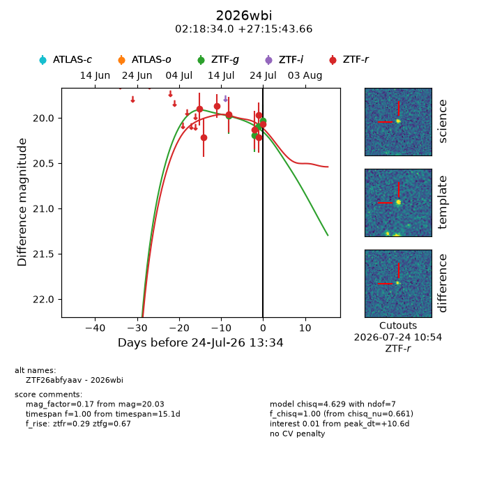
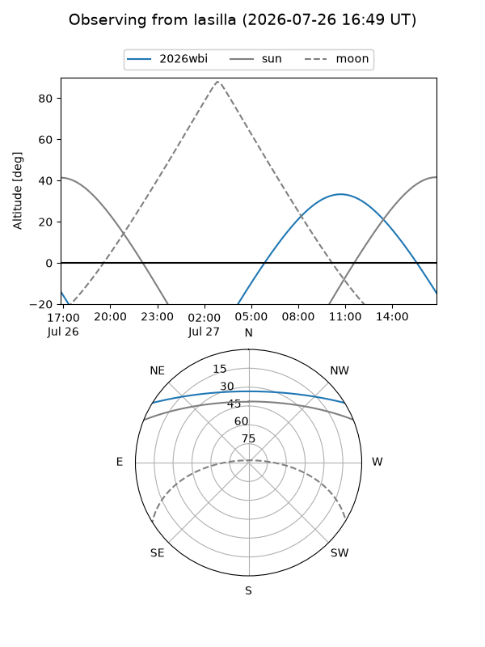
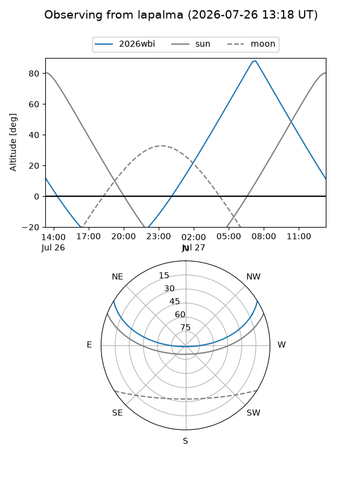
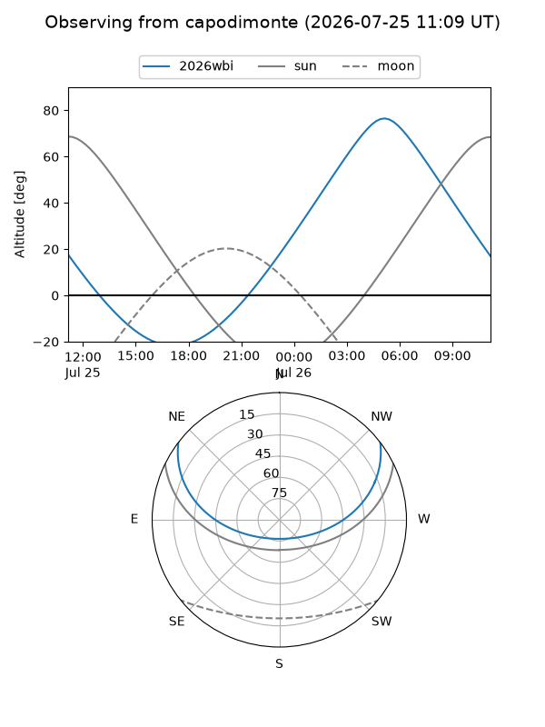
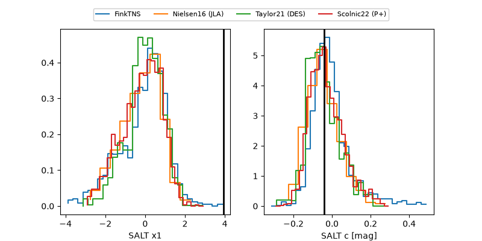

2026wbi
Target 2026wbi at 2026-07-24 13:36
Aliases and brokers:
FINK-ZTF: ztf.fink-portal.org/ZTF26abfyaav
Lasair-ZTF: lasair-ztf.lsst.ac.uk/objects/ZTF26abfyaav
ALeRCE-ZTF: alerce.online/object/ZTF26abfyaav
YSE-PZ: ziggy.ucolick.org/yse/transient_detail/2026wbi
TNS name: wis-tns.org/object/2026wbi
Direct TNS query: direct search
alt names
ZTF26abfyaav (ztf,fink_ztf)
2026wbi (tns,yse)
Coordinates:
equatorial (ra, dec) = 34.6417,+27.26213
equatorial (HMS+DMS) = 02:18:34.00,+27:15:43.66
galactic (l, b) = (145.7487,-31.72035)
Flags:
TNS type: nan
peak dt: +10.6
Photometry:
last ztfg=20.03, ztfr=20.07
4 ztfg, 8 ztfr detections
Lightcurve

Visibility



Additional plots
